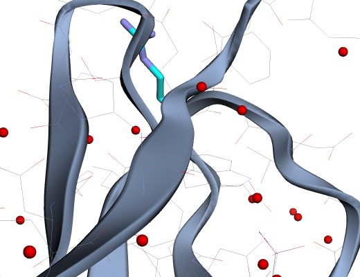
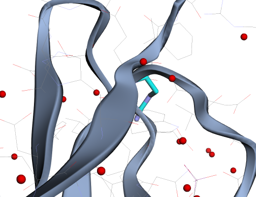
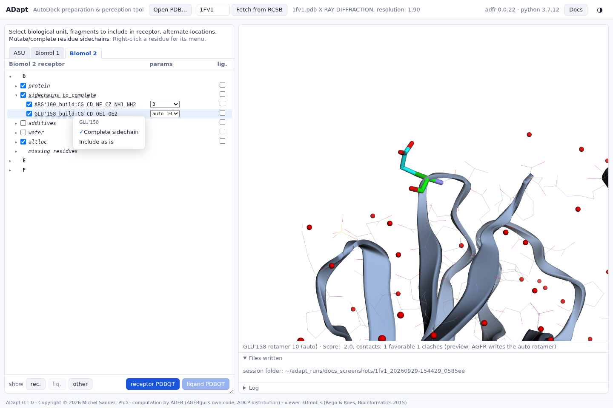
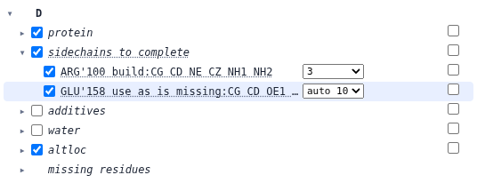

Missing side chains
Rebuild them from a rotamer library, check the rotamer in 3D, or keep only the atoms the experiment saw.
When some side-chain atoms of a standard amino acid are missing, ADapt lists the residue under
sidechains to complete, with the atoms it will build (build: CG CD NE CZ NH1
NH2). By default each such side chain is rebuilt when the receptor is written: every rotamer
of the library is scored for favourable contacts and clashes with its surroundings, and the best
is used.
See the rotamer

auto 59: the best-scoring of the library's 81 arginine rotamers. The status
line gives its score: Score: -1.0, contacts: 2 favorable 2 clashes.The drop-down lists every rotamer of the library. Choosing one redraws it and gives its score. You can also hover over the drop-down and turn the mouse wheel to step through the rotamers one by one, watching the preview and the score change:


auto), whatever the drop-down shows. AGFRgui
behaves the same way; the drop-down lets you judge the alternatives, not pick one.Or keep the side chain as it is
Right-clicking a residue under sidechains to complete offers Complete sidechain (the default) and Include as is. The same menu on the category applies to all of its residues.


use as is missing: CG CD OE1 OE2.
The residue stays in the receptor with the atoms the file has, and its
REMARK 850 AGFR side chain completed line is no longer written.Completing a side chain far from the pocket changes little. Near the pocket it decides what the ligand will meet, so check the rotamer, or leave the side chain incomplete if its position is too uncertain to trust.